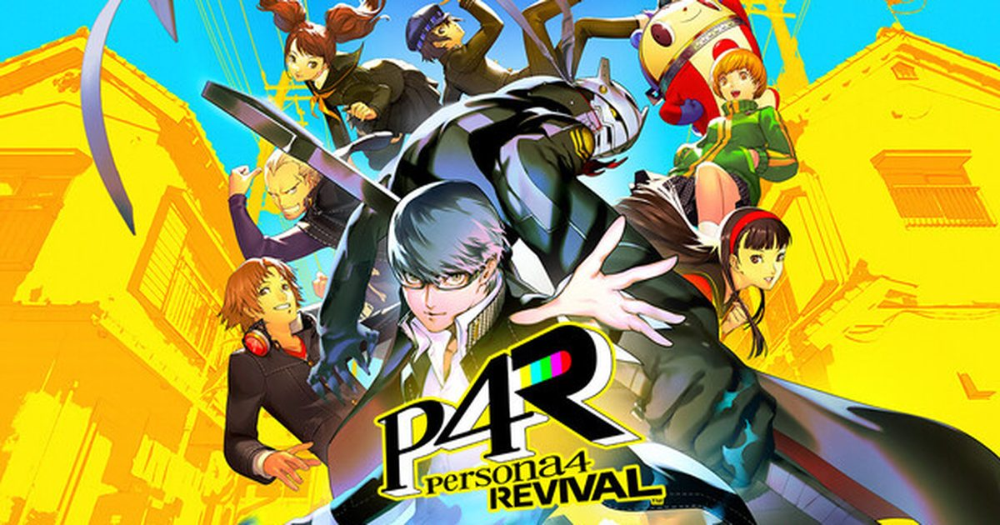

2026-08-21 · JRPG 深读
下周科隆游戏展（8/25 开幕夜、8/26 开馆）的 SEGA 展台，会摆出一台以「Junes 商场」为布景的试玩机——《Persona 4 Revival》第一次把方向盘交到西方玩家手里。而它的发售日已经钉死在 2027 年 2 月 18 日，登陆 PS5 / PC / Xbox Series。问题来了：一部 2008 年的 PS2 游戏、外加 2012 年仍在各平台能买到的《黄金版》，凭什么在 2026 年再被完整翻新一遍？

本届科隆，SEGA 在 7 号馆（Hall 7）放了五个主题试玩位，其中之一就是《P4 Revival》。官方给的细节很克制：试玩区做成稻羽市那座熟悉的 Junes 商场，玩家可以在现场大屏「TV Stack」上投递留言。也就是说，8/26 开馆之后，这会是全球玩家第一次「凭手感」而非「凭预告」判断这部重制——节奏、菜单流畅度、Inaba 小镇的新演出，都将在展台上被千万人摸过一遍。
但真正让社区吵翻的，是「必要性」。Persona 4 的《黄金版（Golden）》至今仍是 Vita / PC / 主机上随手能买、随手能玩的完整体。在不少人眼里，重制一部「还没老」的游戏，是 Atlus 在《P3 Reload》（2024）大获成功后顺势吃红利。可 SEGA 显然不这么看——他们押的是 Unreal Engine 全套翻新、重新编排的配乐，以及把当年大量「纯文本跳过」的社群线（Social Link）全语音化。
从 6 月那场官方 Gameplay Showcase，到 7 月意外流出的近半小时试玩，能拼出一张相对清晰的改动图。战斗系统的骨架还是经典的「One More」弱点追击，但 Atlus 明显在往《P5R》《P3R》那种更利落、更风格化的节奏靠：
① Guard（防御）：可以在迷宫里先把敌人打进硬直，给偷袭/伏击留战术空间；② Baton Pass（接力）：弱点命中后把行动权转给队友，这套从 P5 引入的机制正式进 P4，让四人小队打出更长的连锁；③ Send Flying（击飞）：把异常状态「甩」给一群敌人，等于凭空多了一层群体控场；④ Prime Time（黄金时刻）：战斗中途觉醒，进入 free turn、技能零 SP、无视抗性，最后以一记电影化的「Series Finale」收尾。这几条加在一起，P4 的老战斗从「稳」变成了「爽」。
更关键的其实是「看不见」的部分：全社群线语音化，连当年只有文字的支线场景都有了演出；英文配音彻底换新（新 Yosuke 由 Paul Castro Jr. 接棒）；新增夜间事件、扩展社交活动、新据点，让配角戏份变多。再叠加重新编排的曲目——这已经不是「高清重制」，而是一次叙事体量的扩容。
我们把视野拉高一点：P3R（2024）→ P4 Revival（2027），中间还夹着 Studio Zero 的《Metaphor》（2024），这是 Atlus 的「JRPG 重制第三波」。前两波解决的是「让老游戏在现代硬件跑得动」，这一波解决的是「让没接触过 PS2 时代的新观众，第一次舒服地入坑」。P4 的推理 + 日常双循环，放到 2027 年的屏幕上，需要的不是贴图升级，是一整套演出语言的重写。
这里有个社区反复提的暗线：很多人觉得《P3R》的 UI 太「P5 化」，丢掉了 P3 自己的冷峻。而流出试玩里 P4 Revival 的标题画面（教室、投影仪、黑板的运镜）和过场转场，明显在强化 P4 独有的「电视」主题，而不是套 P5 的红黑模板。换句话说，Atlus 这次的克制，可能恰恰是吸取了 P3R 的反馈——重制不是统一审美，是各自归位。科隆试玩之所以重要，正因为它会是这套「新演出 + 旧灵魂」第一次被大规模公开检验。
我们的评分 革新度 8.6 / 必要性 7.4。战斗现代化与全语音化是实打实的加分；但「黄金版仍在售」这一点，让它很难拿到满分情怀分。
我们的观察 科隆把试玩塞进展台而非开幕夜，说明 SEGA 想用「手感」而非「预告」说话——这是对自己品质有底气，也侧面承认：P4 Revival 要证明的不是「存在」，而是「更好玩」。
我们的观点 重制 P4 的核心动机不是画质，是「身份传承」。Atlus 在用 Unreal Engine 把 P4 的电视美学重新讲一遍，好让 2027 年的新玩家不必先去补一部 2012 年的游戏。老粉嫌多此一举，新人却正需要这扇门。
我们的案例 / 对比 对比《P3R》与《P4 Revival》：前者被批 UI 太接近 P5，后者刻意强化自己的「电视」母题。两代重制的不同取舍，恰好说明 Atlus 已经学会了「每个 IP 该有自己的脸」。
我们的实验 给三类人建议：① 从没玩过 P 系列——把 2027/2/18 当作干净的入坑点，全语音 + 新演出最友好；② 只玩过黄金版——等科隆实机口碑再决定要不要重买；③ 老粉——重点看 Prime Time 是否破坏了原版难度曲线，这是唯一可能翻车的地方。
《Persona 4 Revival》不是一部怀旧复刻，而是一场关于「一部好游戏该如何被重新讲述」的实验。它踩在《黄金版》仍在售的争议之上，也踩在 Atlus 重制方法论成熟的节点之上。下周的科隆试玩，会是它第一次被全世界用「手」而不是用「嘴」评价。对我们来说，结论已经清晰：如果你还没入过 P4 的坑，2027 年这扇门，比任何旧版本都值得推开。